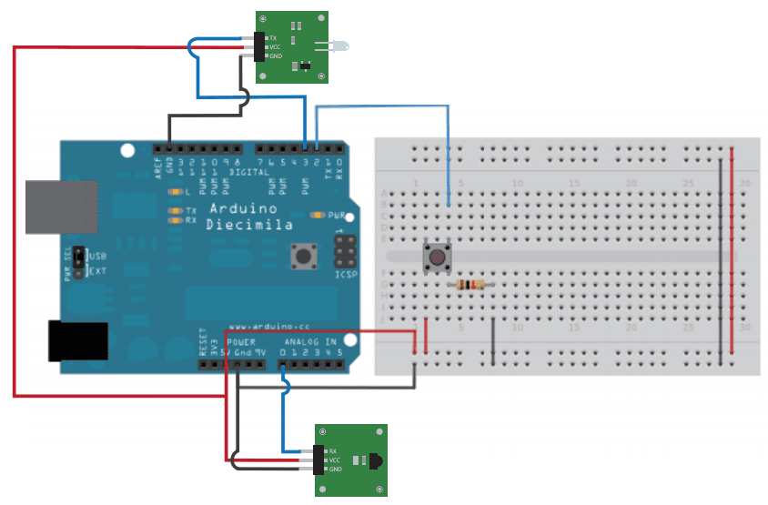
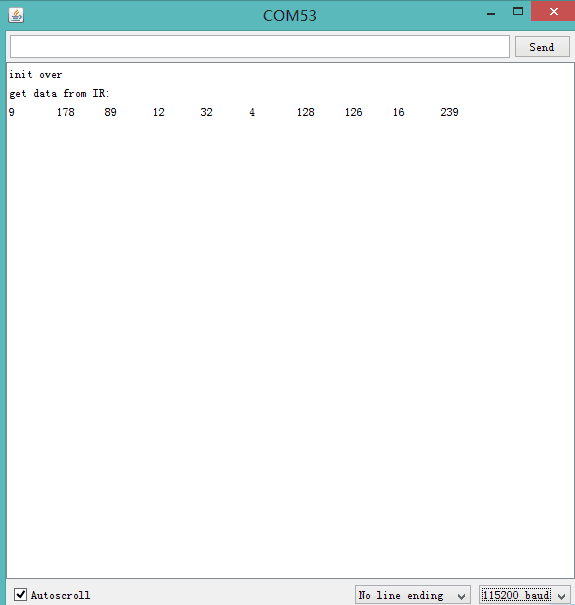

IR is a very common means of communication. This demo will show you how to use IR send and receive module.
Large of household appliances is controled by IR Remote, such as TV, air conditioning and so on.
We can use IR module to control those appliances also.
Hardware Required：
Circuit：
IR Emitter connect to D3 and IR Receiver connect to A4.

Code:
There are two part of code: get value of Remote and Send command.
Get Value of Remote：
Open revTest of IRSendRev Library, open Serial Monitor. Take your Remote, press a button, then you can find a series of number had been printed.

This series of number is what we need, note it, we'll use if later.
Send Command
Open Arduino IDE, click File->Sketchbook->infrared.
If you had get the value of your TV turn-on-off key, then point infrared emitter to your TV, and press the button.
Reference